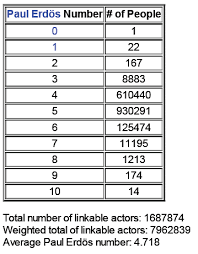
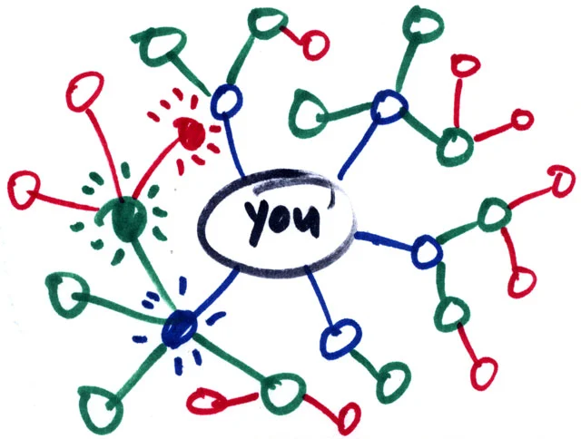

Six degrees of Separation
Đang trong mùa dịch Covid-19 căng thẳng, hôm qua thì đùng cái Hà Nội thông báo có người nhiễm Covid.
Created Mar 7, 2020 - Last updated: Mar 7, 2020
Từ Covid 19
Đang trong mùa dịch Covid-19 căng thẳng, hôm qua thì đùng cái Hà Nội thông báo có người nhiễm Covid. Thế mới thấy, dù cả cộng đồng chung tay dập dịch nhưng sai sót chủ quan của mọi người vẫn xảy ra. Mình có câu hỏi như này, là tại sao bệnh dịch lại lây lan nhanh, khó kiểm soát và cách nó diễn biến theo quy luật nào? Việc lây qua tiếp xúc, 1 người cho nhiều người rồi từ đó lây sang người lớp khác nhưng kích cỡ mức độ gọi là “tiếp xúc” to lớn đến mức nào.
Erdos graph từ toán rời rạc
Mình mới học toán rời rạc kì trước, có một ví dụ rất hay của thầy về đồ thị Erdos như thế này.
Mỗi người xem như là một đỉnh đồ thị, giữa hai người có cạnh nối khi hai người có bài báo chung. Ta coi Erdor xem như là gốc, thì lớp người có bài báo chung với ông sẽ là lớp đầu tiên, tiếp đến lớp thứ 2 sẽ là người có bài báo chung với những người ở lớp đầu, tất nhiên là trừ những người đã liệt kê trước, và cứ thế sẽ có đồ thị Erdor. Việc gì xảy ra khi thay vì Erdor thì là bệnh nhân số 1 thay vì kết nối bởi ‘bài báo chung’ thay bởi ‘có tiếp xúc’. Ta dễ thấy với Erdor graph thì số người sẽ tăng đến một ngưỡng nào đó rồi giảm do số lượng trong một quần thể là hữu hạn, tương tự với ‘Covid-graph’ vì dân số hạn hữu. Câu hỏi tiếp theo là liệu có thể phủ hết được toàn bộ 7.7 tỉ người trên trái đất không?
Six degrees of separation
Có cả những nghiên cứu về vấn đề này, đó là ‘Six degrees of separation’ tạm dịch là ‘6 trạm phân cách’. Phát biểu như sau ‘Giữa 2 người bất kì trên thế giới, cần tối đa 6 người khác để kết nối họ’. Nghĩa là giữa 2 người A, B nào đó, sẽ tìm được A1, A2,…,A6 sao cho A kết nối A1, A2 kết nối A3, cứ thế cho đến B. Kết nối ở đây có thể hiểu ở nhiều mặt, như là quen biết, bạn bè, gặp mặt, v.v. Ý tưởng này là của một nhà văn người Hungary Frigyes Karinthy nêu ra với tên là ‘Chain-Links’. Mình một người bình thường ở Việt Nam cũng có thể connect được với Putin ở Nga xa xôi chỉ với 6 người trung gian, hay là với Rooney ở Anh, hoặc gần gũi hơn thì như bố mẹ mình kết nối được với nhau vậy mặc dù chắc là qua ít trạm hơn.
Tất nhiên là chưa thể khẳng định được, các nhà khoa học còn phải thí nghiệm mô phỏng nhiều để kiểm chứng. Tuy nhiên đây cũng là một cơ sở để Social Network phát triển như hiện nay. Facebook, Twitter,… rất quan tâm đến số lượng người dùng và cách kết nối giữa họ. Một thí nghiệm diễn ra trên Twitter để tìm câu hỏi cho cần trung bình bao nhiêu ’trạm’ để kết nối giữa 2 người dùng bất kì trên Twitter qua Follower. Họ chỉ ra rằng chỉ cần trung bình 3.43 trạm, còn nhỏ hơn con số 6 kia nhiều. Con số này dự đoán sẽ giảm đi trong tương lai. Loài người gắn kết hơn, thế giới thu nhỏ lại. Trái đất nhỏ bé là vậy.
Kết
Quay lại với Covid-19, việc phủ hết dân số thế giới là điều rất khó xảy ra. Sự hạn chế lây lan sẽ có một cách đó là làm mờ đi những ‘kết nối’. Kết nối ở đây là ’tiếp xúc có khả năng truyền bệnh’, cần hạn chế điều này. Tất nhiên chẳng phải lo quá, đặc biệt là trong thời hiện đại này,con người có nhận thức mức độ về dịch hơn, cho nên các ‘kết nối’ giữa cá thể lây bệnh cho nhau sẽ được làm mờ đi rất đáng kể.
Một chút thú vị cho tối thứ 7. Nhân tiện mai là 8/3, xin chúc những người phụ nữ một ngày lễ ý nghĩa và hạnh phúc. Cheers